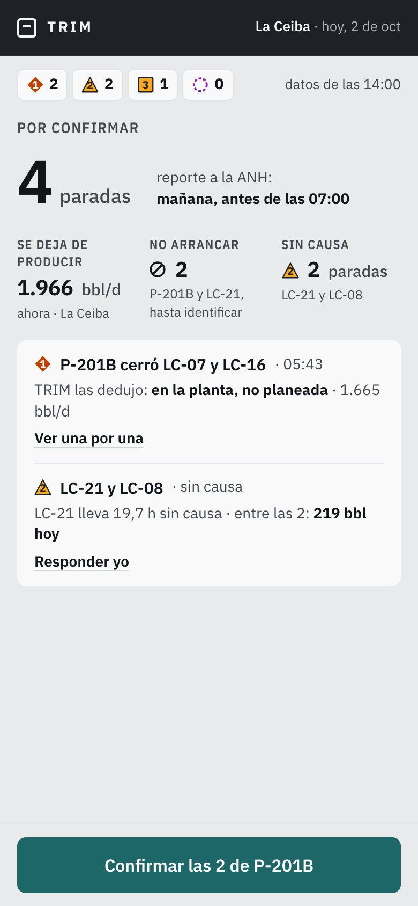
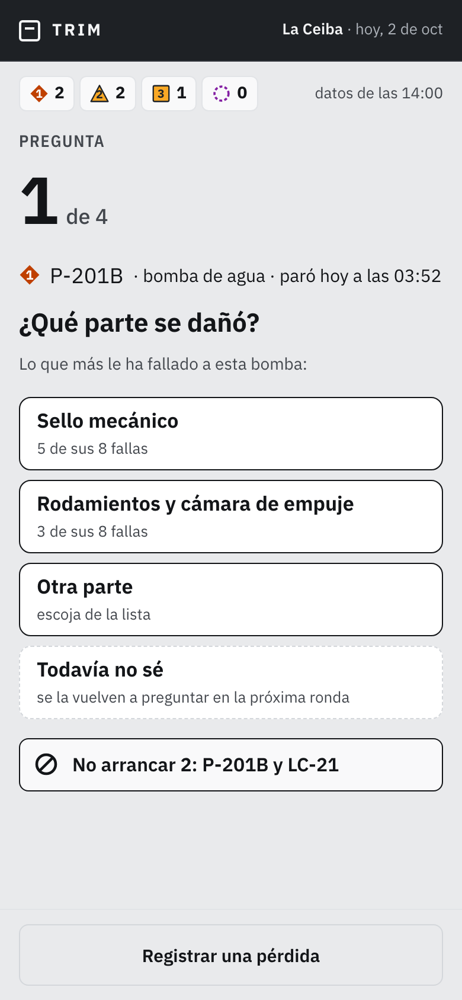
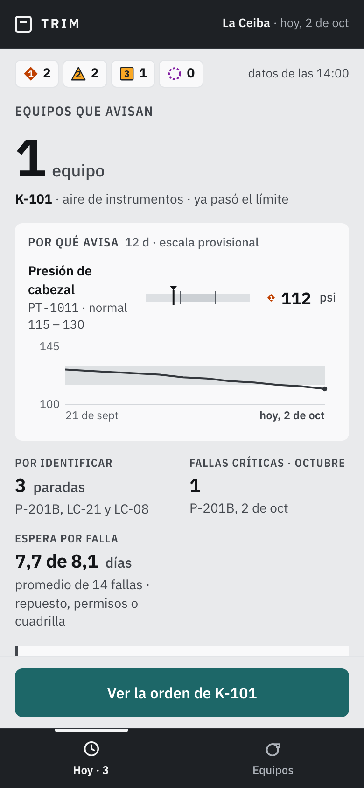
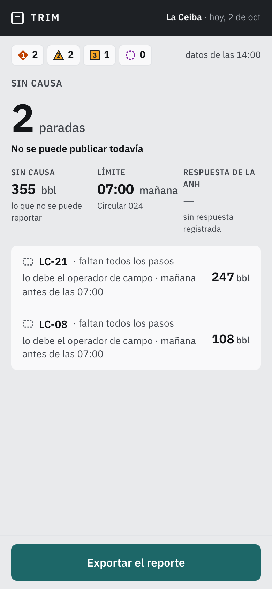
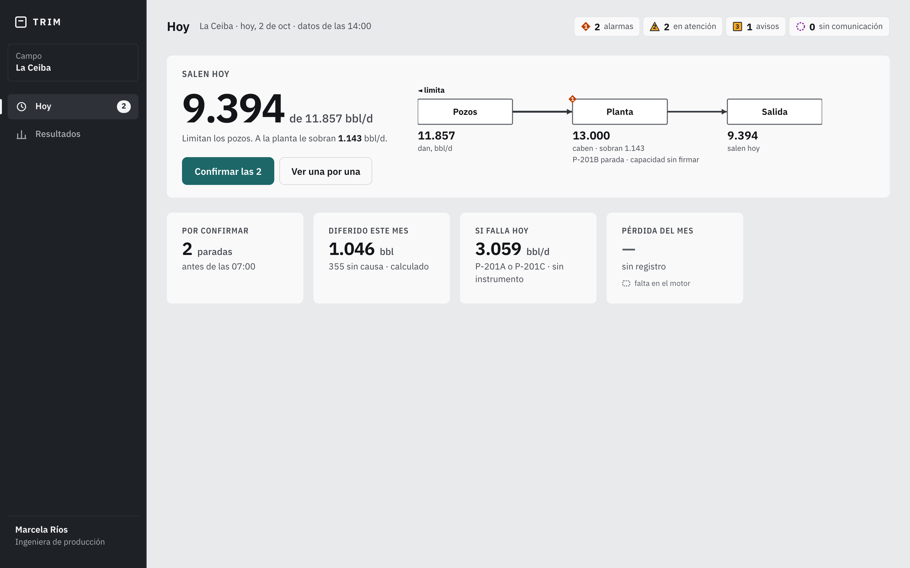
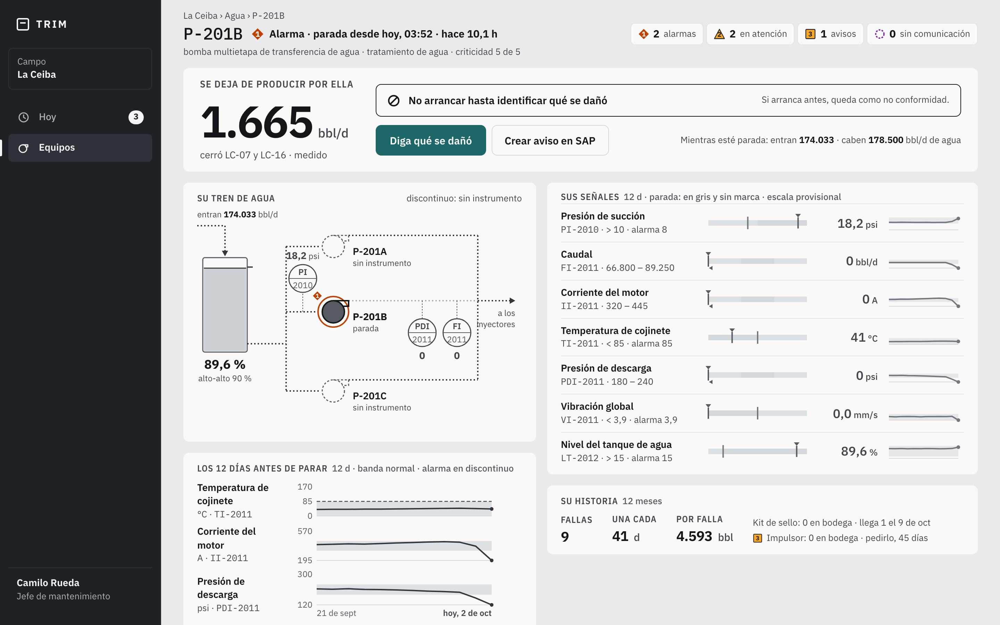
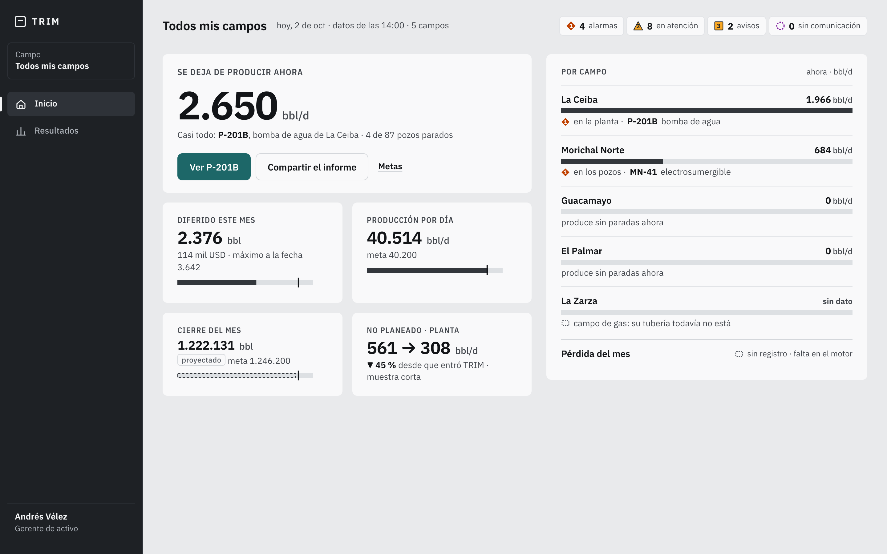
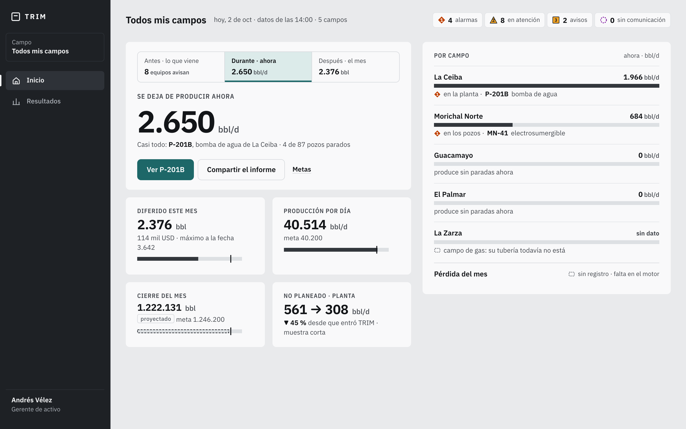
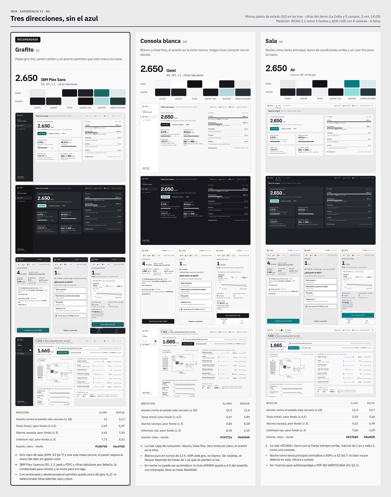
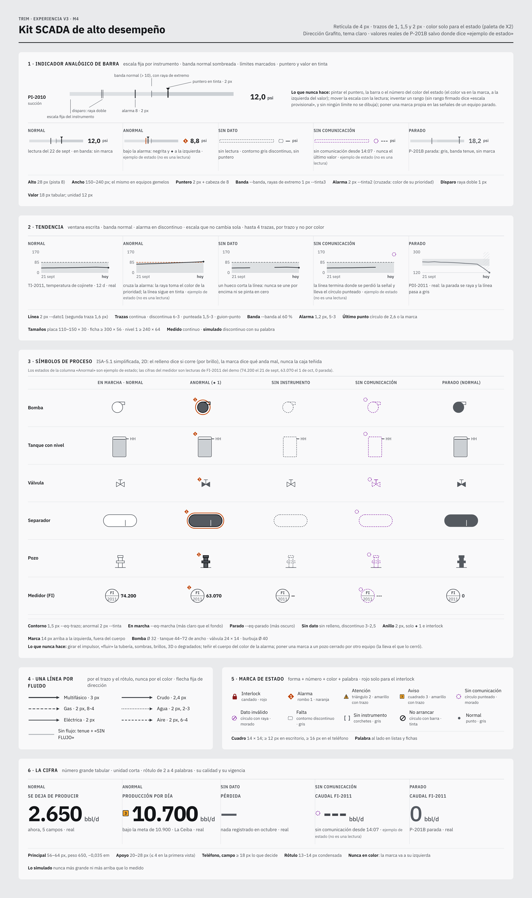

0Lo necesario de cada rol
Desde una hoja en blanco: qué ve, qué hace y cuándo. Cada número sale del motor, con las cifras del demo. El detalle por rol está en necesario-por-rol.md y roles/.
| Rol | Abre en (número principal) | Acción principal, 1 toque | Cuándo |
|---|---|---|---|
| Gerente | 2.650 bbl/d se dejan de producir ahora | Abrir el equipo que más pesa | Cada mañana; a fin de mes, metas e informe |
| Producción | 9.394 de 11.857 bbl/d salen hoy | Confirmar las paradas del día, en lote | Al empezar el día; a fin de mes, el cuadre |
| Supervisor | 4 paradas por confirmar (antes de las 07:00) | Confirmar en lote | Al recibir y entregar turno; si para una bomba |
| Operador | 1 de 4 preguntas | Contestar qué se dañó | Cuando le preguntan |
| Jefe de mantenimiento | 1 equipo avisa (K-101) | Ver o crear la orden | Cada mañana; en la reunión semanal |
| Confiabilidad | 3.059 bbl/d · el primero de «Si falla hoy» | Abrir ese equipo | Cada semana |
| Técnico | 5 cosas le tocan hoy | Decir qué encontró | Al empezar el día |
| Regulatorio | 2 paradas sin causa | Pedir la causa / exportar el reporte | Cada mañana, antes de las 07:00 |
| Administrador | 3 de 6 pasos listos | Seguir el paso que falta | Mientras se implementa |
| Planeadora | Sigue apagada: su número y sus acciones no existen en el motor todavía. | ||
| Abastecimiento | Sale del producto: no baja un barril; el responsable ya está en el árbol de la ANH. | ||
Operador, técnico, regulatorio y administrador quedan con una sola pantalla y sin menú. Hoy hay 29 puertas y 64 pantallas; lo necesario pide 15 puertas.






necesario-por-rol.md.)1El gerente: ¿con o sin «Antes · Durante · Después»?
El análisis propone sacarlo de la primera pantalla porque ningún rol decide algo distinto con él. Usted lo pidió en la v2 («el antes, durante y después de ese pipeline»). Por eso no se da por hecho.


2Lo que se borra
30 cosas se borran del producto, otras salen de las puertas de un rol y otras se funden. Cerca del 73 % del texto de las puertas sale de la primera capa (parte queda a un toque). Prueba del 10 %: el primer corte borró de más y hubo que devolver 9 cosas. El detalle, con el porqué y quién lo pidió, está en borrado.md.
- WhatsApp completo: 19 funciones. Las 9 con valor ya tienen su reemplazo dentro de TRIM (la pregunta en Hoy, el escalamiento como insignia, la entrega de turno en pantalla y PDF). Ojo: se pierde el aviso que llega a alguien que no tiene TRIM abierto.
- La pantalla Turno (repite Hoy), «Su campo, ahora» y «Diferido de su turno».
- Diferidos, Mantenimiento, Bombas y Electrosumergibles como pantallas (quedan como Resultados y filtros de Equipos), y la tubería repetida tres veces.
- «Dónde bajarlo», «Tipo de causa» y el retorno simulado del ciclo en la primera capa.
- La introducción: una pantalla necesaria se entiende sola.
- El rol de abastecimiento y su pantalla Evidencia.
3Los flujos que fallan hoy
Investigados en la app de verdad: 41 tareas de los 11 roles, en escritorio y teléfono, con 240 capturas (flujos-que-fallan.md). Los toques de «después» son la propuesta.
| # | Flujo | Qué está mal | Toques |
|---|---|---|---|
| 1 | Decir qué se dañó en P-201B (oper, tec, sup, jefe, conf) | La misma pregunta en 5 bandejas, con 6 nombres y 2 controles distintos | 3 → 1 |
| 2 | Decidir los planes (sup, jefe, conf) | «Ver los planes» abre una pantalla donde no están | 3 + desplazar → 1 |
| 3 | Entregar el turno (sup, oper) | El turno vive en 3 lugares; en el teléfono el botón está al fondo | 2 + 2 desplazar → 2 |
| 4 | Avisar a SAP (sup, oper, jefe, conf) | TRIM dice «SAP no lo sabe» pero el aviso se crea dentro del equipo | 3 → 1 |
| 5 | La orden de K-101 (tec, jefe) | Solo se lee; el técnico no la puede cerrar | callejón → 1 |
| 6 | Pedir la causa que falta (reg) | El número dice quién la debe, pero no hay botón | imposible → 1 |
| 7 | Qué atacar primero (conf) | P-201A aparece 3 veces; el inicio mide 6.300 px en el teléfono | 4–7 desplazar → 0–1 |
| 8 | Quién está en ello (ger) | La ficha lo cambia de campo sin avisar; 3 botones abren lo mismo | 5 → 2 |
| 9 | Confirmar las paradas del día (prod) | Abre en La planta viva; la tarea está en Hoy | 2 → 1 |
| 10 | Cambiar de pantalla en el teléfono (todos) | Todo pasa por el menú ☰ | 2 → 1 |
4El diseño sin azul
Tres direcciones, con la misma paleta de estado ISA-101. Las tres pasan las mediciones de contraste y daltonismo. Hallazgo: el índigo de hoy no las pasaba (quedaba a 6,2 del morado de «sin comunicación»).


5Lo que le toca a su desarrollador del backend
Él tiene la versión 1 (7-oct). Todo va «al lado, nunca encima». El detalle, con ejemplos, está en docs/backend/CAMBIOS-CONTRATO.md.
| Construir ahora | Para después | Ya no construir | |
|---|---|---|---|
| Las 50 rutas de la v1 | 35 | 5 | 10 |
| Las 29 nuevas de la v2 | 23 | 3 | 3 |
| Total | 58 | 8 | 13 |
- Hay que construir 9 piezas nuevas que lo necesario pide: registrar pérdidas, cerrar la orden en el teléfono, la respuesta de la ANH, convertir el árbol de la operadora, el tiempo fuera en 5 tramos, entre otras. Todas se agregan al lado.
- Desde la v1 hubo 19 cambios que le romperían algo (un campo que cambió de significado, textos, reglas de cálculo y el SQL). En la construcción se arreglan dejándolos compatibles con la v1.
- El SQL: hay dos documentos que dicen cosas distintas sobre cuál rige, el de la v1 o el nuevo.
Sus decisiones, en una lista
- ¿Aprueba lo necesario de cada rol? ¿Hasta qué escalón se construye?
- Gerente: A (sin «Antes · Durante · Después») o B (con él).
- ¿Aprueba lo que se borra, incluido WhatsApp?
- Teléfono: barra abajo o panel lateral.
- Diseño: D1 Grafito, D2 Consola blanca o D3 Sala.
- Backend: SQL de la v1 con lo nuevo al lado, o el SQL nuevo.
Con sus respuestas y su «hazlo», se construye y se prueba todo.